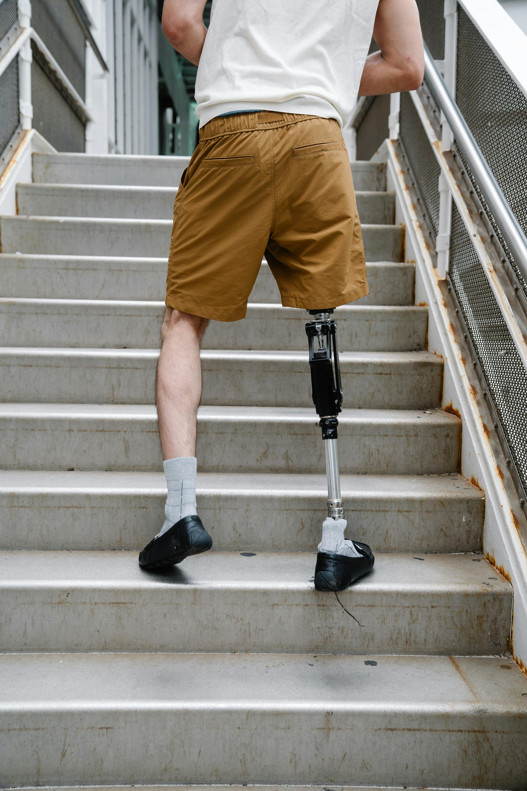
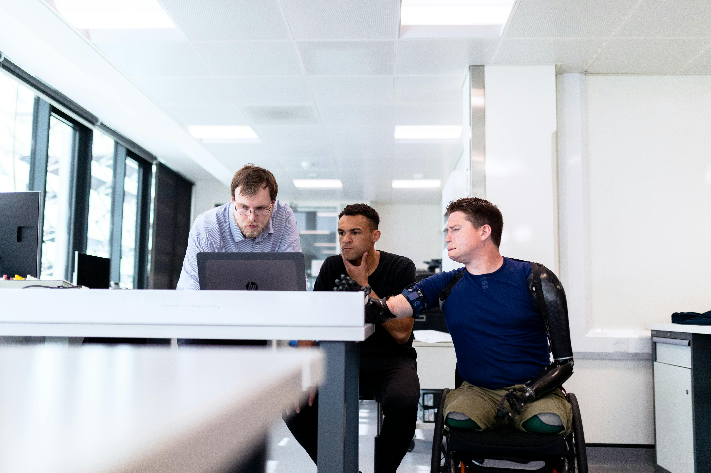
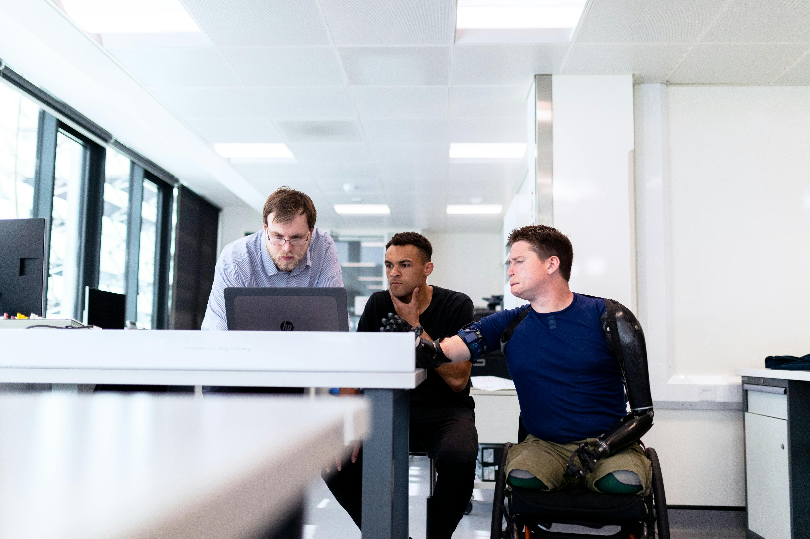
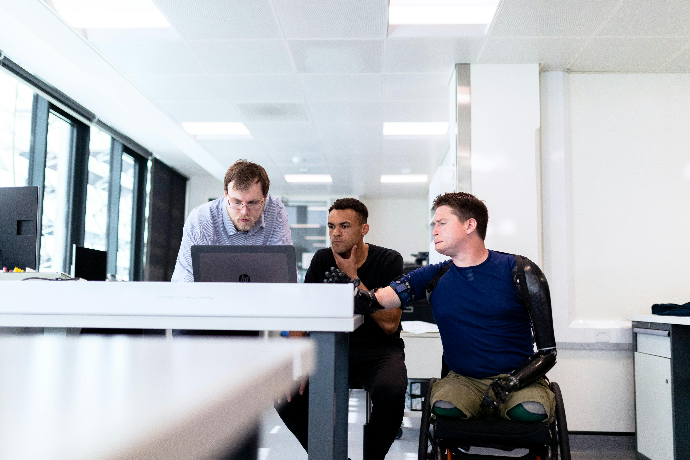

Protez Nedir?
Protezler, vücuttaki eksik veya hasar görmüş bir uzvun yerini almak için tasarlanmış yapay cihazlardır. Bu cihazlar, genellikle fiziksel engellilik, yaralanma veya doğuştan gelen anomaliler gibi durumlarda kullanılır.
Detayları Öğrenin Videoyu İzleyin

 

